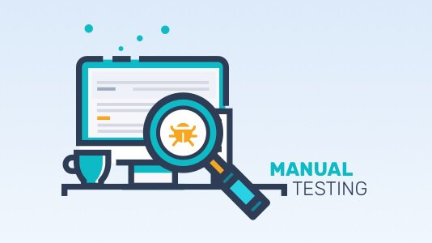

В чём суть мануального тестирования Программного Обеспечения?
Тестирование Программного Обеспечения — процесс исследования, испытания программного продукта, имеющий своей целью проверку соответствия между реальным поведением программы и её ожидаемым поведением на конечном наборе тестов, выбранных определённым образом.
В разное время и в различных источниках тестированию давались различные определения, в том числе:
- процесс выполнения программы с целью нахождения ошибок;
- интеллектуальная дисциплина, имеющая целью получение надёжного программного обеспечения без излишних усилий на его проверку;
- техническое исследование программы для получения информации о её качестве с точки зрения определённого круга заинтересованных лиц;
- проверка соответствия между реальным поведением программы и её ожидаемым поведением на конечном наборе тестов, выполненных определённым образом;
- процесс наблюдения за выполнением программы в специальных условиях и вынесения на этой основе оценки каких-либо аспектов её работы;
- процесс, имеющий целью выявление ситуаций, в которых поведение программы является неправильным, нежелательным или не соответствующим спецификации;
- процесс, содержащий в себе все активности жизненного цикла, как динамические, так и статические, касающиеся планирования, подготовки и оценки программного продукта и связанных с этим результатов работ с целью определить, что они соответствуют описанным требованиям, показать, что они подходят для заявленных целей и для определения дефектов.
Мануальное тестирование (ручное тестирование) — часть процесса тестирования на этапе контроля качества в процессе разработки программного обеспечения. Оно проводится тестировщиками или обычными пользователями путём моделирования возможных сценариев действия пользователя. Задача тестировщика заключается в поиске наибольшего количества ошибок. Он должен хорошо знать наиболее часто допускаемые ошибки и уметь находить их за минимально короткий период времени. Остальные ошибки, которые не являются типовыми, обнаруживаются только тщательно созданными наборами тестов. Однако, из этого не следует, что для типовых ошибок не нужно составлять тесты.
Ключевой концепцией ручного тестирования является обеспечение того, что приложение не содержит ошибок и работает в соответствии с указанными функциональными требованиями.
Наборы тестов или кейсы, разработанные на этапе тестирования и должны иметь 100% охват тестированием. Это также гарантирует, что заявленные дефекты были исправлены разработчиками, а тестеры выполнили повторное тестирование исправленных дефектов. По сути, это тестирование проверяет качество системы и доставляет продукт без ошибок покупателю.
Среди типов мануального тестирования выделяют:
- Тестирование черного ящика
- Тестирование белого ящика
- Модульное тестирование
- Тестирование системы
- Интеграционное тестирование
- Приемочное тестирование
Ручное тестирование заключается в выполнении задокументированной процедуры, где описана методика выполнения тестов. Методика задает порядок тестов и для каждого теста – список значений параметров, который подаётся на вход со списком результатов на выходе. Так как процедура предназначена для выполнения человеком, в её описании для краткости могут использоваться некоторые значения по умолчанию, ориентированные на здравый смысл, или ссылки на информацию, хранящуюся в другом документе.
Пример фрагмента процедуры: подать на вход три разных целых числа; запустить тестовое исполнение; проверить, соответствует ли полученный результат таблице с учётом поправок; убедиться в понятности и корректности выдаваемой сопроводительной информации.
В этой процедуре тестировщик использует дополнительные документы и собственное понимание того, какую сопроводительную информацию считать "понятной и корректной”. Успех от использования процедурного подхода достигается в случае однозначного понимания тестировщиком всех пунктов процедуры.